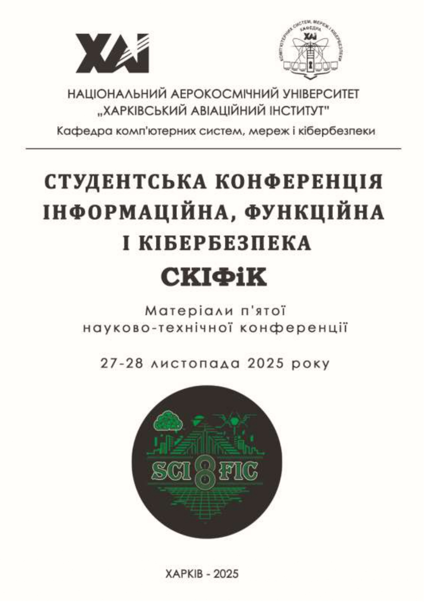
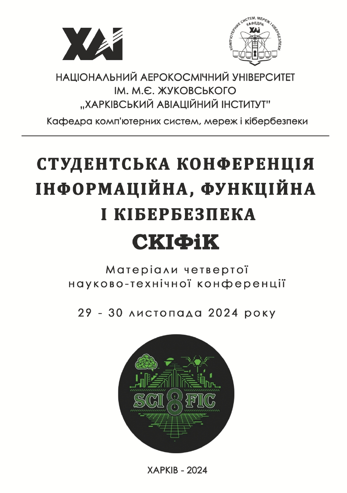
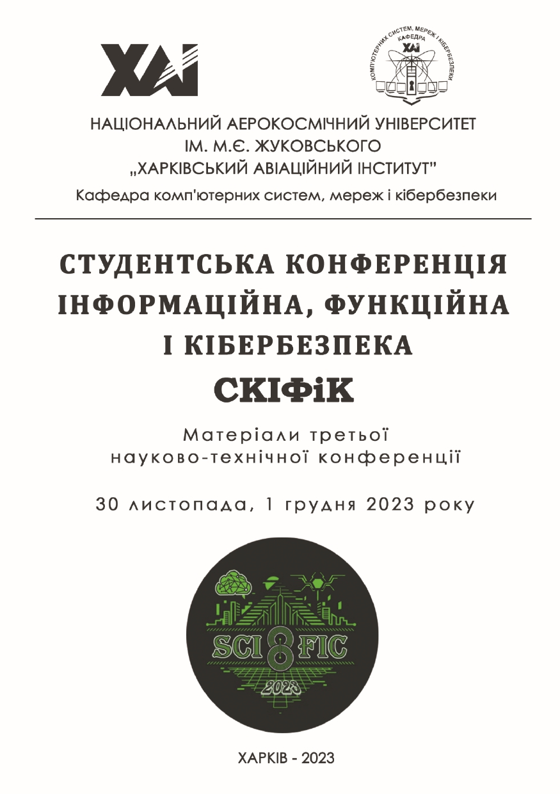
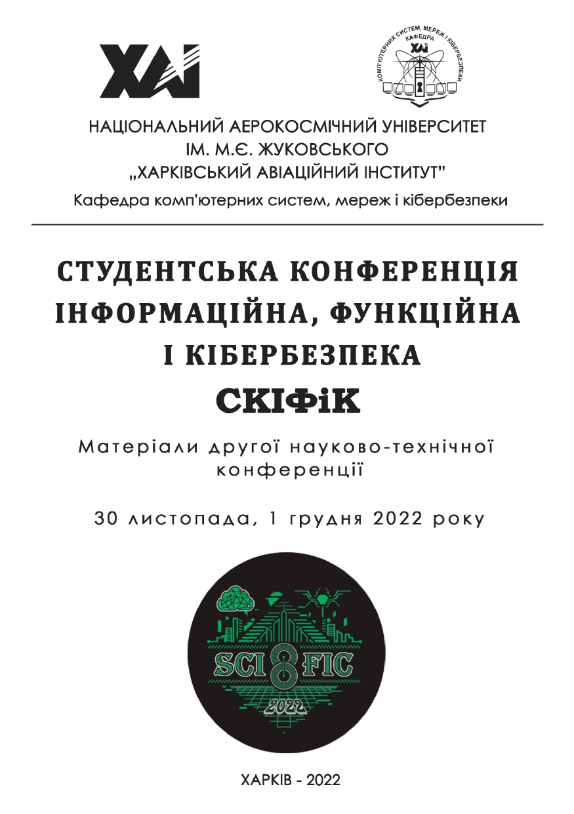
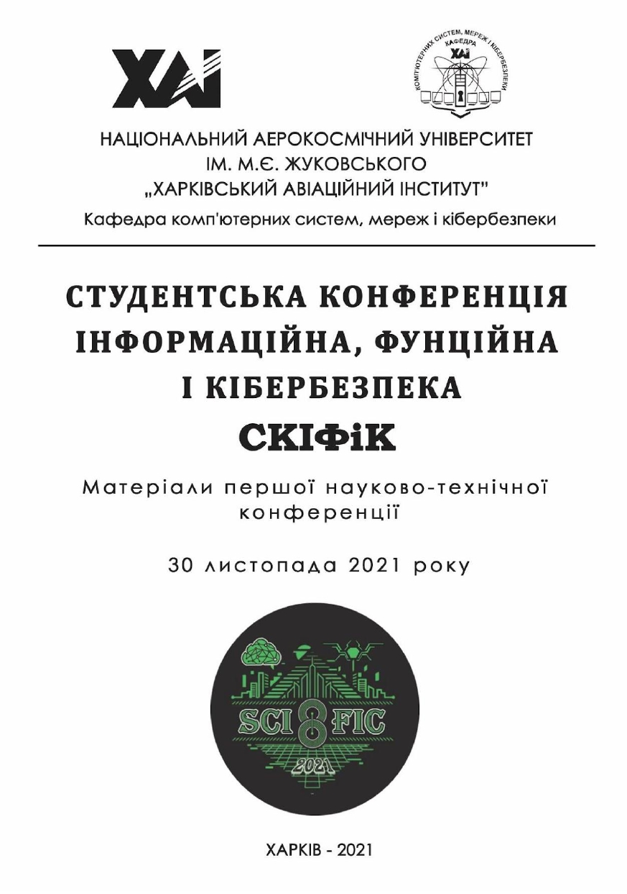

Conference Archive

SCIFiC 2025 Proceedings
Full conference: International Student Conference on Cybersecurity SCIFiC 2025
ISBN: 978-617-8587-21-5
DOI: 10.13140/RG.2.2.32148.16001
Published: November 2025
Publisher: National Aerospace University "Kharkiv Aviation Institute"
Description: This collection presents the abstracts from the fifth student scientific and technical conference, “Student Conference Information, Functional, and Cybersecurity”. The proceedings cover a range of research areas, including: Information Security; Functional Safety; Cybersecurity; Information Security Management; Data Protection in Information and Communication Systems; Symmetric and Asymmetric Encryption Systems; Information Protection Systems for Web and Mobile Applications; Cloud Systems Security; Attack and Defense Methods utilizing Artificial Intelligence; Smart System Protection; Protection of the Internet of Things and Autonomous Systems; Regulatory and Legal Aspects of Information and Cybersecurity. The conference is structured into three dedicated sections: Information and Cybersecurity; Functional Safety; Cybersecurity Law and Regulation.

SCIFiC 2024 Proceedings
Full conference: International Student Conference on Cybersecurity SCIFiC 2024
ISBN: 978-617-8238-78-0
DOI: 10.13140/RG.2.2.14272.75521
Published: November 2024
Publisher: National Aerospace University "Kharkiv Aviation Institute"
Description: The collection presents the abstracts of reports from the fourth scientific and technical student conference, "Student Conference on Information, Functional, and Cybersecurity". Topics covered include the following areas: information security, functional safety, cybersecurity, symmetric and asymmetric encryption systems, information protection systems for web and mobile applications, methods of attacks and defense using artificial intelligence, smart systems, the Internet of Things, and autonomous systems. The conference is divided into two sections: information security and functional safety.

SCIFiC 2023 Proceedings
Full conference: International Student Conference on Cybersecurity SCIFiC 2023
ISBN: 978-617-8238-26-1
DOI: 10.13140/RG.2.2.29180.31363
Published: November 2023
Publisher: National Aerospace University "Kharkiv Aviation Institute"
Description: The collection of theses contains abstracts of presentations from the third scientific and technical student conference named "Student Conference on Information, Functional, and Cybersecurity." The discussed topics span across several directions: information security, functional security, cybersecurity, symmetric and asymmetric cryptography systems, information protection systems for web and mobile applications, methods of attack and defence utilizing artificial intelligence, smart systems, and the Internet of Things (IoT). The conference is divided into two sections: information and cybersecurity and functional security.

SCIFiC 2022 Proceedings
Full conference: International Student Conference on Cybersecurity SCIFiC 2022
ISBN: 978-617-8009-90-8
DOI: 10.13140/RG.2.2.29592.67844/1
Published: November 2022
Publisher: National Aerospace University "Kharkiv Aviation Institute"
Description: Abstracts of reports of the second scientific and technical student conference "Student Information, Functional and Cybersecurity Conference" are presented in the collection. Issues considered in the following areas: information security; functional safety; cyber security; methods of attacks and protection using artificial intelligence, smart systems, the Internet of Things. The conference is divided into two sections: information security; functional safety.

SCIFiC 2021 Proceedings
Full conference: International Student Conference on Cybersecurity SCIFiC 2021
ISBN: 978-966-1681-54-4
DOI: 10.13140/RG.2.2.16395.05926
Published: November 2021
Publisher: National Aerospace University "Kharkiv Aviation Institute"
Description: Abstracts of reports of the first scientific and technical student conference "Student Information, Functional and Cybersecurity Conference" are presented in the collection. Issues considered in the following areas: information security; functional safety; cyber security; methods of attacks and protection using artificial intelligence, smart systems, the Internet of Things. The conference is divided into two sections: information security; functional safety.